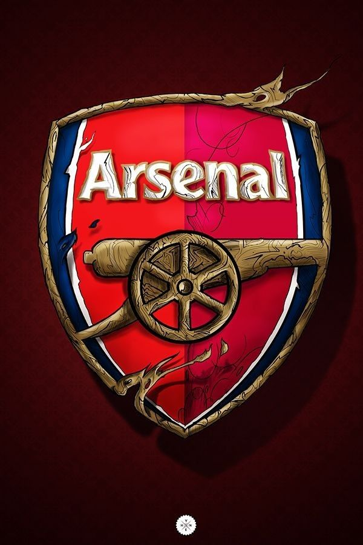
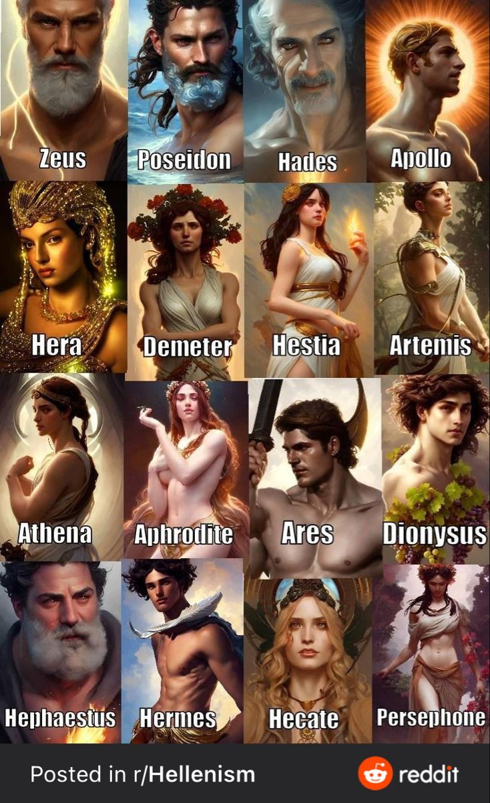
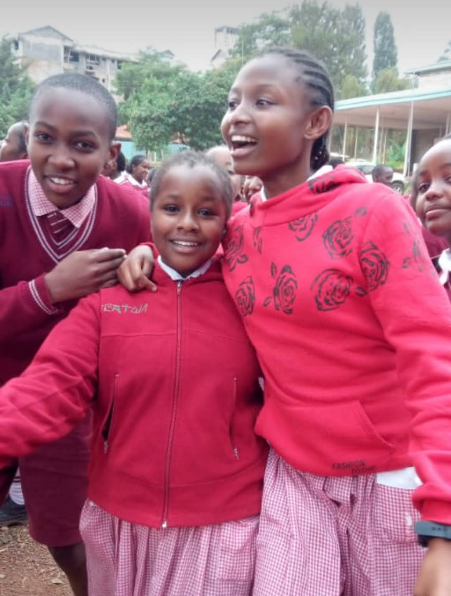
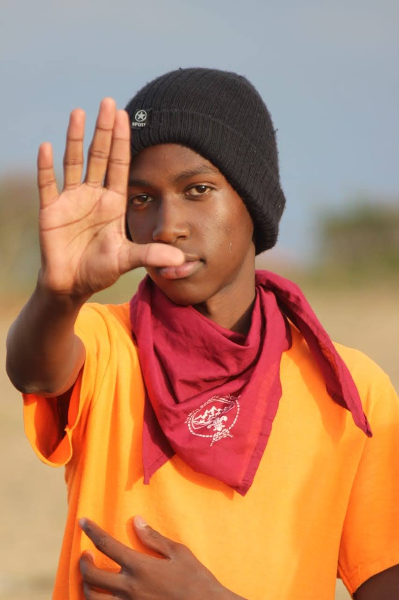
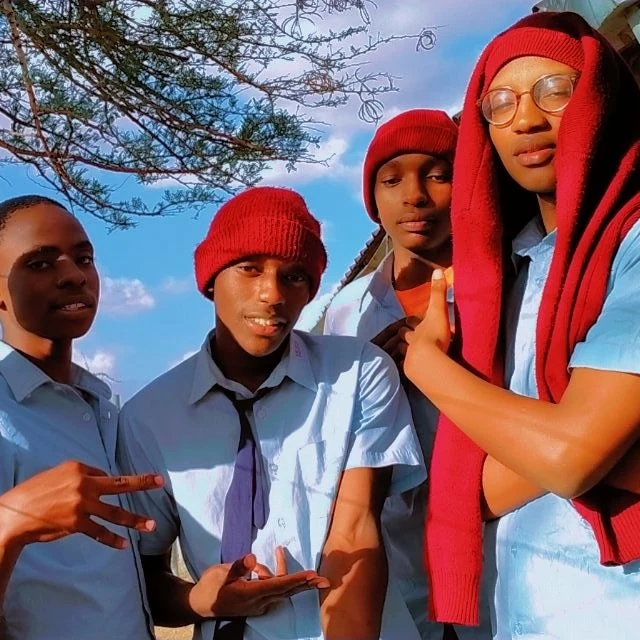
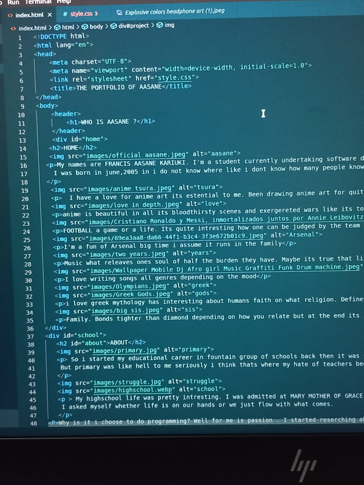
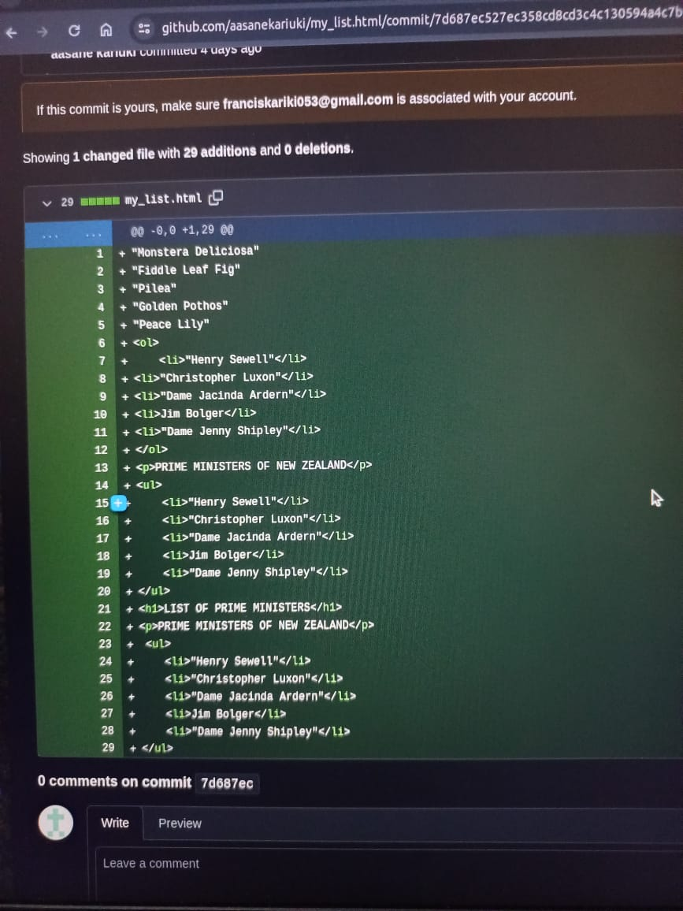
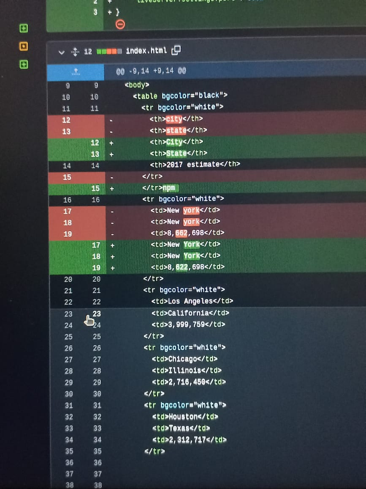
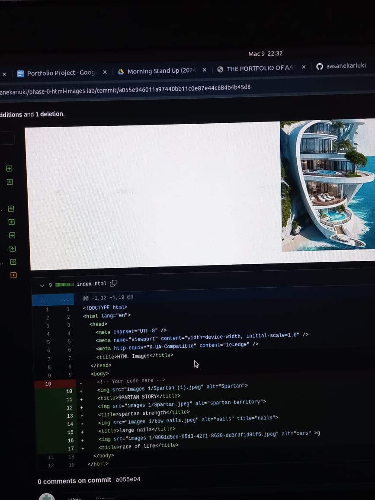

HOME

My names are FRANCIS AASANE KARIUKI. I'm a student currently undertaking software development.
I was born in june,2005 in i do not know where like i dont know how many people know that.

I have a love for anime art its estential to me. Been drawing anime art for quite some time.

anime is beautiful in all its bloodthirsty scenes and exergereted wars like its topnotch creativity

FOOTBALL a game or a life. Its quite intresting how one can be judged by the team they follow.

I'm a fun of Arsenal big time i assume it runs in the family

Music what releaves ones soul of half the burden they have. Maybe its true that life is a beautiful melody only the lyrics are scrumbled.

I love writing songs all genres depending on the mood


i love greek mythology has interesting about humans faith on what religion. Defines how man can be controlled by faith

Family. Bonds tighter than diamond depending on how you relate but at the end its just them.
ABOUT

So i started my educational career in fountain group of schools back then it was small. I later transfered to Good shepherds academy where i finished my primary educational.
But primary was like hell to me seriously i think thats where my hate of teachers began,and continues upto today.Well some i loved truly but lets keep this between us.


My highschool life was pretty intresting. I was admitted at MARY MOTHER OF GRACE. At first it has hectic and later in Form 1 i rose to power. I started of as Dinning hall captain FORM 1-2 then in FORM 3-4 i was elected as the school captain . I know right unbelivable.
I asked myself whether life is on our hands or we just flow with what comes.
Why is it i choose to do programming? Well for me is passion . I started reserching about programming when i was in class 6.Since then i have always known i want to be a developer. Actually i thought knowing programming would make
me invisible like as a hacker or sought of.
PROJECTS
Language Used: HTML,CSS
The project i'm working on is based on creating your personal PORTFOLIO.

Language used : HTML
I worked on html lists we followed the procedure of making ordered lists and unordered lists

Language used : HTML
We created html tables and made boundaries. At first most did not know how to draw the boundaries but they were quite easy

Language used : HTML
We made images using HTML and later learnt css to size them although we did concentrate on them. Images were quite fun actually downloading
your favourite stuff and writing code
